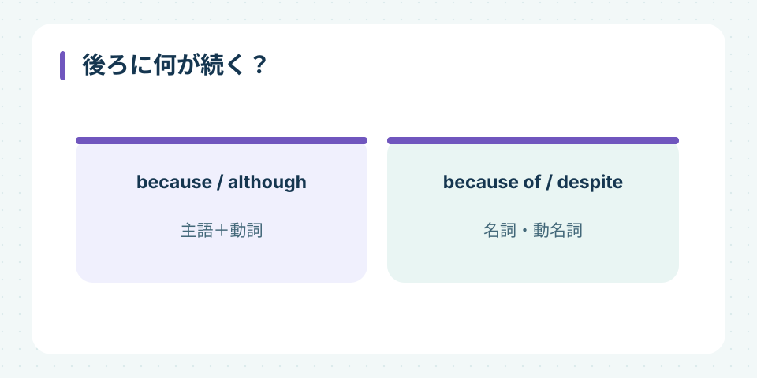

although・because・despiteの違い
「〜なので」「〜にもかかわらず」を表す語は似ていますが、後ろに文が続くのか名詞が続くのかで選択肢を絞れます。
このページで学べること
譲歩・理由の接続詞と前置詞を整理。要点を読んだら、最後の確認問題で理解度をチェックしましょう。
接続詞の後には主語＋動詞

because / although / though / while は後ろに節（主語と動詞を含むまとまり）を導きます。
I stayed home because it was raining.
Although it was raining, I went out.
前置詞の後には名詞句
because of / despite / in spite of の後ろには名詞または動名詞が来ます。
| 意味 | 節が続く | 名詞が続く |
|---|---|---|
| 理由 | because it rained | because of the rain |
| 譲歩 | although it rained | despite the rain |
despite of は通常誤りです。despite はそれだけで前置詞です。
空欄の直後を見て判断
前後の意味だけでなく空欄の後ろの形を確認します。「( ) his illness, he worked.」の直後は名詞句なので Despite が使えます。「( ) he was ill, he worked.」は Although が自然です。
確認問題に挑戦！
全3問。答えを考えてから「解答と解説を見る」を押してね。
( ) the heavy snow, the train arrived on time.
解答と解説を見る ＋
Despite / In spite of
直後が名詞句 the heavy snow なので前置詞。意味は逆接。
She was happy ( ) she passed the exam.
解答と解説を見る ＋
because
後ろが主語＋動詞の節で、理由を表す。
( ) he was tired, he kept studying.
解答と解説を見る ＋
Although / Though
後ろが節で、譲歩の意味。
接続詞の後は節、前置詞の後は名詞句。意味と形の両方で判断。
ここまで読めたら、ひと区切り。
理解できたら学習済みにチェックして、次の記事へ。
StudyMasterの無料学習コンテンツです。AIを補助的に用いて作成しています。例題・解答は公開前にご自身でも確認してください。内容に誤りがある場合は、学校の教科書などと照合してください。
公開・更新：2026年11月12日